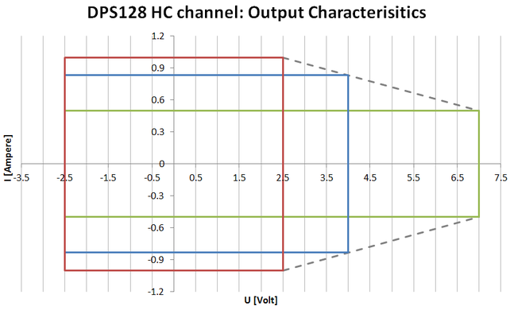
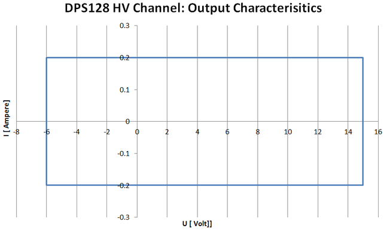

DPS128 V-I curves and board power restrictions
The V-I curves of the two types of DPS128 channels are quite different. Despite the fact of different voltage ranges and less current capability for HV type of channels, the HV type of channels do not have any current limit to voltage dependency over their voltage operating range as there is for HC type. In other words a HV type of channel can provide its maximum current limit for all possible voltages over the whole operating range.
Output characteristics


For HC channels, the maximum current limit depends on the voltage range. For a specified voltage range of 2.5 V the maximum current limit is 1 A, while for a specified voltage range of 7 V the maximum current is 500 mA. For voltage ranges between 7 V and 2.5 V, the maximum current limit decreases in a linear manner, for example, for a specified voltage range of 4 V the maximum current is 0.833 A.
To achieve 3 A @ 4V it is required to gang:
- 4 channels, if voltage range is set to 4 V
- 6 channels, if voltage range is set to 7 V (default)
Refer to DPS128 voltage ranges for more details.
What also needs to be taken into consideration is that the V-I curve cannot be mapped one-to-one to a complete DPS128 board - the maximum current limit of a channel cannot be applied to all channels of a board in parallel. This restriction is driven by the overall available power budget of a board.
Differences in maximum current source / sink capabilities per card
- DPS128-HC, HC type of channel, 128 channels (E8013CS)
- Maximum current per channel is 1 A @ 2.5 V; 0.833 A @ 4 V; 0.5 A @ 7 V
- 66 A / 58 A @ 2.5 V maximum source / sink current per board
- 1 A / 0.879 A @ 2.5 V simultaneously on 66 channels
(if others at lowest current range)
(66 channels - 33 channels per power domain)
- 0.480 A / 0.411 A @ 2.5 V simultaneously on 128 channels
- 0.346 A / 0.405 A @ 4 V simultaneously on 128 channels
- 0.209 A / 0.394 A @ 7 V simultaneously on 128 channels
- DPS64-HC, HC type of channel, 64 channels (E8023CSH)
- Maximum current per channel is 1 A @ 2.5 V; 0.833 A @ 4 V; 0.5 A @ 7 V
- 64 A / 64 A @ 2.5 V maximum source / sink current per board
- 1 A / 1 A @ 2.5 V simultaneously on 64 channels
- 0.833 A / 0.833 A @ 4 V simultaneously on 64 channels
- 0.5 A / 0.5 A @ 7 V simultaneously on 64 channels
- DPS128-HV, HV type of channel, 128 channels (E8013CSW)
- Maximum current per channel is 0.2 A
- 13.2 A / 24.4 A maximum source / sink current per board
- 0.089 A / 0.188 A simultaneously on 128 channels
- DPS128-HC/HV, mix of HC and HV type of channel, 64 channels each (E8013CSV)
- HC portion:
- Maximum current per channel is 1 A @ 2.5 V; 0.833 A @ 4 V; 0.5 A @ 7 V
- 62 A / 54 A @ 2.5 V maximum source / sink current per board (only HC channels used)
- 0.983 A / 0.849 A @ 2.5 V simultaneously on 64 channels (only HC channels used)
- 0.726 A / 0.833 A @ 4 V simultaneously on 64 channels (only HC channels used)
- 0.465 A / 0.5 A @ 7 V simultaneously on 64 channels (only HC channels used)
- HV portion:
- Maximum current per channel is 0.2 A
- 12.8 A / 12.8 A maximum source / sink current per board (only HV channels used)
- 0.2 A / 0.2 A simultaneously on 64 channels (only HV channels used)
- HC portion:
Refer to DPS128 power budget decision model for more information on power budget related dependencies, such as programmed current limits and voltage ranges.